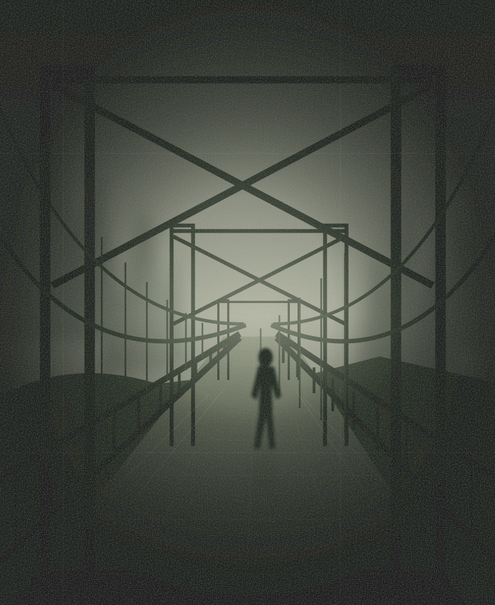

GJENÅPNET ETTER 23 ÅR
SAK 013BLOD–
LØPET.
2001 — 2024
Alle kom i mål.
Bortsett fra nummer 13.
En forsvinning. Fire spor. En hemmelighet som aldri skulle frem i lyset. Dere har funnet svarene. Nå venter resten av historien.
BEGRENSET INNSYN · KUN FOR ETTERFORSKERE
BEVISMATERIALE 01 ARKIVKOPI

59° 54′ N 10° 44′ E 31.10.2001KL. 19:13
FIG. 01 SISTE KJENTE OBSERVASJON
UOPPKLARTSAK NR. 013 / 2001
NAVN FJERNET FRA ARKIVETÉn deltaker er fortsatt savnet.
SAKSMAPPE 013 / IDENTITETSKONTROLL
Hva fant dere der ute?
Skriv inn svarene fra de fire postene. Bruk notatene deres.
0/ 04
SPOR BEKREFTET
SPOR BEKREFTET
IDENTITET BEKREFTET
Alle sporene peker mot den samme historien.
SAK 013 / KRYPTERT VEDLEGG
Arkivet våkner.
Kontrollerer bevismateriale …
IKKE LUKK SAKSMAPPEN
SAK 013 / SLUTTRAPPORTGRADERING OPPHEVET
DETTE BLE ALDRI OFFENTLIGGJORT
SLUTT PÅ RAPPORT013